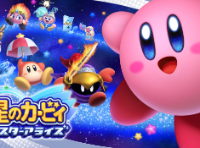
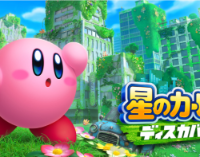
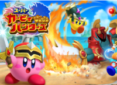
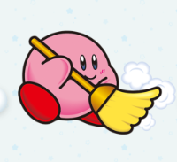
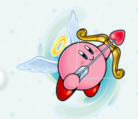
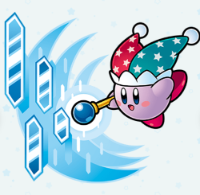
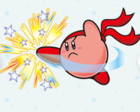

星のカービィ スターアライズ：宇宙で闇の光「ジャマハート」が降り注ぎプププランドが異変。 一方、カービィは「フレンズハート」を受け取り、暴れ出したワドルディ達を見て異変を察知し、仲間とともに暗雲に包まれたデデデ城へ向かう。本作では『Wii』以来である本編での4人同時プレイが復活しているうえに『スーパーデラックス/ウルトラスーパーデラックス』以来であるヘルパーが復活している。なお、本作でのヘルパーは「フレンズハート」の力を得たカービィがコピー能力を持った敵キャラクターにハートを当てることで仲間にするという形式となっており、仲間になった敵は本作では「フレンズヘルパー」と呼ばれる。また、新能力「フレンズ能力」が登場する。さらに、過去作の主要キャラクターが様々な形で登場する他、一部は「ドリームフレンズ」という特殊なヘルパーとして仲間になることも。

星のカービィ ディスカバリー：カービィは謎の渦に吸い込まれ「新世界」に迷い込み、ビースト軍団にさらわれたワドルディ達を救うため、新たな仲間エフィリンと冒険へ出る。シナリオがよく、照準が定まりやすかったり難易度選択もあり、非常にストレスの少ない仕様。ゲーム内コインでガチャが引けたり、カービィがアルバイトを行うミニゲームがあったりと、やりこみ要素も多い。

カービィ ハンターズ：最大4人で協力してボスと戦うアクションRPG。短時間で遊べてやり込み要素も豊富。
Recommended Abilities

クリーン：「はいて とっ風 まきおこし ホウキで ハキハキ せいそうかつどう！」 アニメからの逆輸入。変身カービィ人気投票で1位。

エンジェル：「テンシのすがたで アクマのように 空からてきを ねらいうち！」鏡の大迷宮で登場。飛んでいるときは頭のわっかがひかる。割と扱いにくいが、普通に可愛すぎる

ミラー：「ふしぎなのうりょく そのなもミラー うつせばぶんしん まもればはんしゃ！」コピー能力総選挙で1位。体が薄紫で可愛い。SDXとUSDX、ロボボプラネットに登場。

ファイター：「オッス オイラは かくとうコピーっす！ ワザも めちゃんこ あるっす！」簡単なコマンド入力により多種多彩な格闘系の技が出せるようになる。登場数が多い。